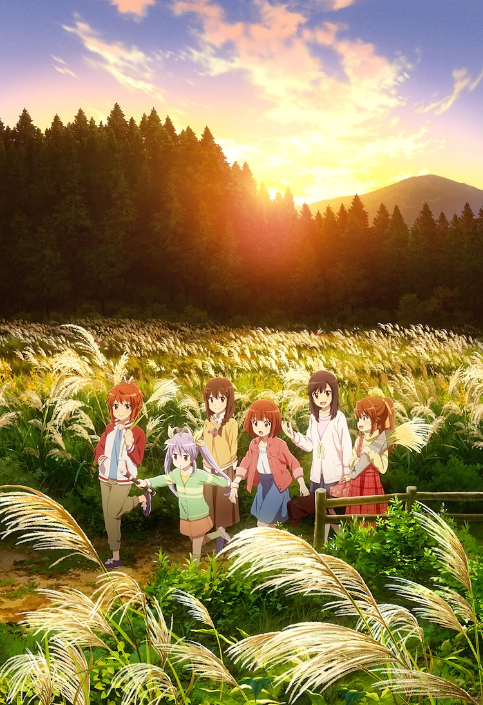
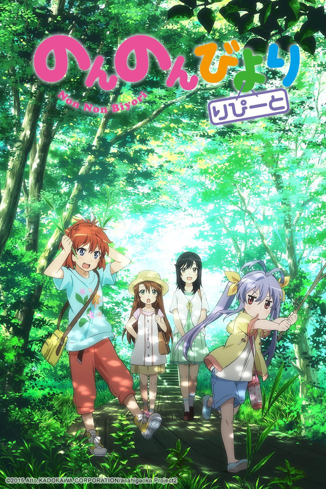

Nyanpasu Passeie em uma trilha com a nova arte promocional da terceira temporada de Non Non Biyori
Non Non Biyori: Non Stop está previsto para estrear em janeiro de 2021 no Japão
TheTweroOutubro 02 2020, 17:00

Natsumi, Komari, Renge e Hotaru estão todas animadas com a volta de Non Non Biyori, com a sua terceira temporada intitulada Non Non Biyori: Non Stop chegando em janeiro de 2021 no Japão. Com a chegada da nova temporada do anime, baseado no mangá igualmente incrível de Atto, a Mantan Web informou que uma nova arte promocional foi publicada, mostrando as quatro amigas passeando em uma trilha ao pôr-do-sol e também nos apresentou a uma nova personagem: Akane Shinoda.

Akane Shinoda
Trailer de Anúncio de Non Non Biyori: Non Stop
Você pode conferir as duas primeiras temporadas de Non Non Biyori que estão disponíveis aqui na Crunchyroll.pt, com legendas em português!
